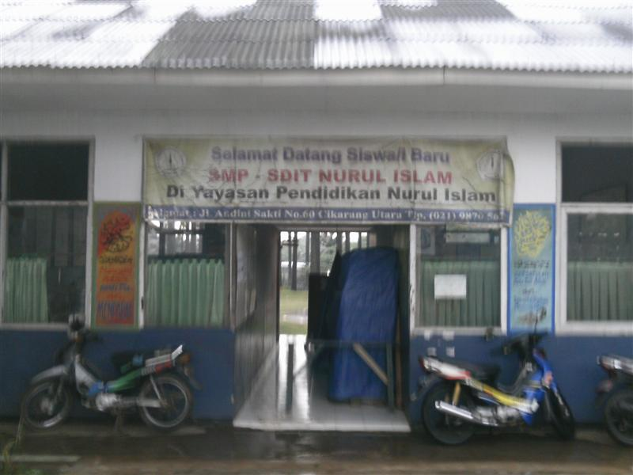
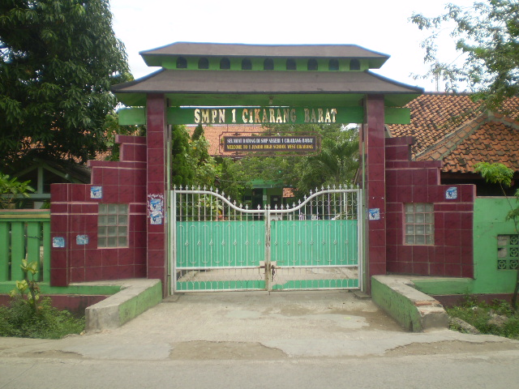

Full Name: Ai Fauziah
Nick Name: Ai,Ziah
Adress: Perumahan villa mutiara, Bekasi
Place, Date of Birth: Garut,January 10th 2001
Ages: 17 years old
Gender: Female
Religions: Moslem
Wishes in the future:
- To be a scientist
- Be a kind person for everyone
- Graduate from SMAKBO with the good grades
- Get a decent job with a high salary
- Make My parent and My Family happy and proud of me
Hobbies:
- Travelling, terutama ke tempat dengan alam terbuka
- Mendengarkan musik

1. SDIT nurul islam

2. SMPN 1 Cikarang Barat

3. SMK-SMAK Bogor

Nama Saya ai fauziah. Biasanya saya dipanggil Ai. Saya berasal dari Garut. Tetapi sejak kecil saya tinggal di Bekasi. Sekarang umur saya 17 tahun. Saya anak pertama dari 3 bersaudara.Saya sekarang duduk di kelas 11 di SMK-SMAk Bogor. SMK-SMAK Bogor adalah sekolah dengan jurusan teknik kimia. Saya dapat masuk ke SMK-SMAK Bogor melalui jalur testing.
Ketika saya masuk SMK- SMAk Bogor banyak hal baru yang saya dapati. Dari mulai pelajarannya yang sangat berbeda dengan pelajaran SMA lainnya, teman -teman yang sangat berbeda sifatnya satu sama lain, sistem belajar yang sangat baik dan membuat saya harus benar benar fokus dalam pembelajaran, dan guru - guru yang sabar mengajar dan membimbing. Saya berusaha untuk selalu belajar dengan baik di SMK-SMAK Bogor agar saya dapat lulus dengan nilai yang baik dan memuaskan sehingga dapat membahagiakan orang tua dan keluarga. Karena begitu banyak lika-liku di SMAKBO ini. Selain itu juga agar dapat mendapatkan pekerjaan yang baik ketika lulus nanti.
Saya memiliki dua hobi yaitu mendengarkan musik dan travelling.Hobi saya yang pertama adalah travelling Saya sangat suka sekali mengunjungi tempat- tempat seru yang meyenangkan dan memliki keindahan alam yang luar biasa. Tempat-tempat itu seperti gunung, danau, pantai, dan masih banyak lagi. Yang kedua hobi Saya adalah mendengarkan musik. Saya sangat suka mendengarkan lagu-lagu yang berbajasa Inggris, tapi saya juga mendengarkan lagu berbahsa Indonesia/jepang dan contohnya lagu-lagu One OK Rock, tetapi akhir-akhir ini saya sering mendegarkan lagu "How long-Charlie Puth". Biasanya saya mendengarkan musik disaat saya sedang stress. Saya sangat suka mendengarkan lagu-lagu Maher Zain yang bernuansa Religi, karena dapat mengingatkan saya pada Tuhan saya lewat lagu-lagu miliknya.